Chilldeck's Portfolio



Part code, part circuit, part shadow. Chilldeck moves through the web like a digital ninja — precise, silent, and always two steps ahead.
Every project is a mission: clean design, elegant logic, and interfaces that strike fast and flow smooth. Years in the code forge have tempered both instinct and discipline.
Whether deploying a full stack or fine-tuning a single animation, Chilldeck builds with balance — efficiency wrapped in mystery, machine focus guided by human art.

- JavaScript, TypeScript, HTML5, CSS3 – craft seamless, invisible-to-the-eye interfaces.
- Swift, Kotlin, Java – agile and precise backend logic without leaving a trace.
- React, Angular, Vue – strike fast with modular, battle-ready components.
- Node.js, Express – silent server-side operations that never stumble.
- VS Code, Android Studio, Git & GitHub – my armory of precision instruments.
- Photoshop, Illustrator, Figma – subtle illusions in UI/UX, making pixels obey.
I move silently through code… but if you wish to reach me, the signal is open.

Whether it’s a project, a collaboration, or just a cryptic hello, send a message—I’ll intercept it.
See you in the digital shadows, where mind and machine intertwine